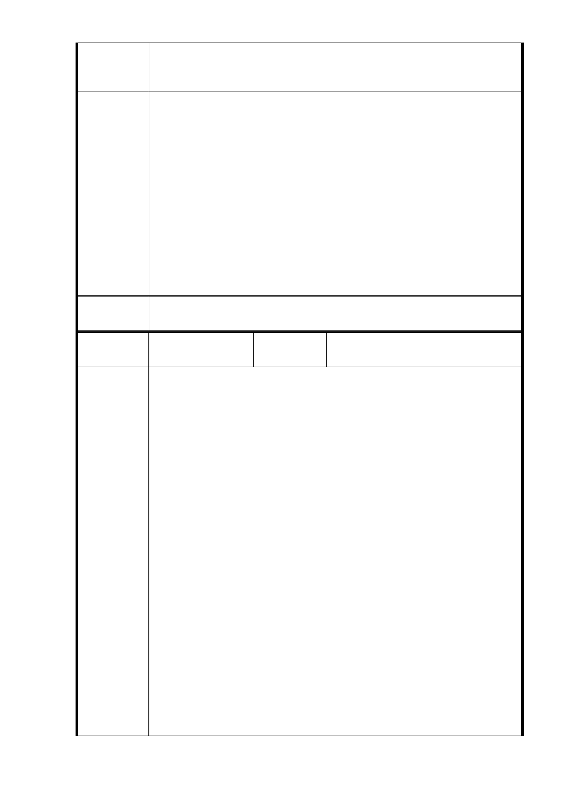

議。貴會及台北市政府如執意違約違法辦理前揭程序，造成本公
司日後難以履約或受有重大損失，本公司將依法求償，並追究貴
會、台北市政府及相關承辦人員法律責任。。
1.有關「民間參與廣慈博愛園區興建及營運案」經社會局表示，
其係因柏德開發股份公司未依契約規定如期取得第一期土地
之建造執照，延宕社福設施開發興建與推動期程，違約情事重
大，並經本府將爭議提付中華民國仲裁協會仲裁後，業於102
市府回應
意見
年3月5日依仲裁判斷予以塗銷該公司之土地地上權登記。本府
已於102年6月5日取回土地，故該公司已無權對土地作任何主
張。
2.又市政建設刻不容緩，本府及所屬相關單位與該公司其他進行
中之仲裁及行政訴訟爭議，應依後續判決及法令途徑處理，並
不影響本案都市計畫之進行。
專案小組
審查結論
同編號 1。
委
決
員
會
議
同編號 1。
編號
9-a
陳情人
柏○開發股份有限公司
（103.2.24）
主旨：有關本公司函請台北市政府都市計畫委員會停止辦理廣慈
博愛園區開發案相關審議及核定程序，請貴府予以尊重，
切莫就貴我間仍有履約爭議事項，阻撓本公司合法維護權
益作為，詳如說明，請查照。
說明：
一、 覆貴府民國 103 年 2 月 18 日府社綜字第 10331 141100
號函。
二、 本公司與貴府於民國 98 年 6 月 15 日簽訂「民間參與
廣慈博愛園區興建及營建契約」（下稱系爭契約），由
本公司取得臺北市信義區福德段二小段 319 地號等 11
筆土地（下稱系爭土地）之興建、開發及營運權利，
陳情理由
嗣因貴府片面違法終止契約，衍生履約爭議，現仍由
雙方合意之仲裁庭依法審理中（案號：中華民國仲裁
協會 102 年仲聲孝字第 27 號）。
三、 中華民國仲裁協會 101 年度仲聲和字第 7 號仲裁判斷
，並非針對係爭契約是否已全部確定終止所為判斷，
是依係爭契約第 16.5 條約定：「除非本契約已全部確定
終止，於爭議處理期間甲乙雙方均應繼續執行本契約
。」因此，在本公司與貴府就前述履約爭議確定解決
前，雙方均應繼續履行契約，本公司仍享有繼續開發
系爭土地之權利，貴府來函稱本公司就系爭土地己無
任何權利，顯非事實。
四、 又，貴府為全國首善之都行政機關，應恪守契約及法
- 41 -